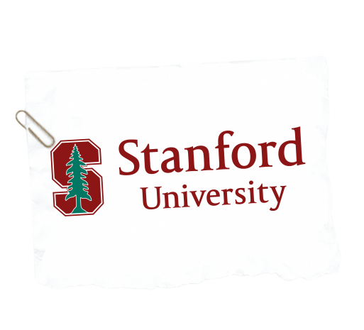
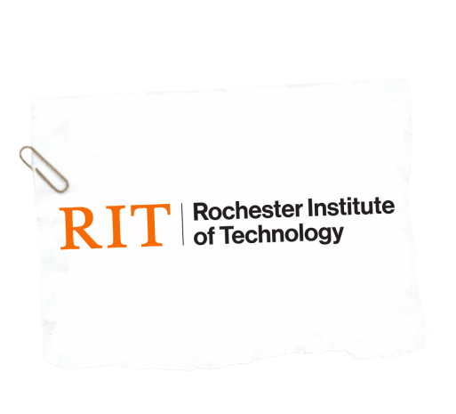
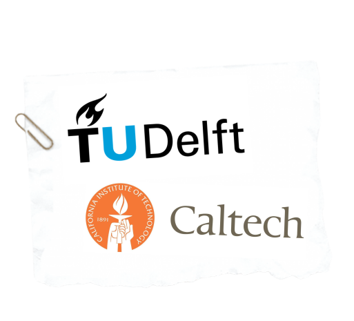

It's important to have a solid foundation prior to trying to become a professional cryptographer. Look for these courses/colleges if you plan on pursuing a career in cryptography -- both classical or quantum!

| Stanford University5 Introduction to Cryptography |
This introductory course focuses on basic cryptographic techniques such as encryption, hashing, network security protocols such as SSL, and more. It is recommended to have some programming experience and a basic understanding of probability/modular math. Good choice if you want to pursue a career in cybersecurity in general. |
| Stevens Institute of Technology6 Algebraic Cryptography Center |
While it does not offer membership to students and instead is run by faculty, it does offer many workshops and conferences that would be beneficial to attend! More advanced option if you want to gain valuable experience with cryptography in a professional setting. |
| Rochester Institute of Technology7 Computing Security Degree |
RIT's cybersecurity program is well-known for being widely accredited and hosted in the Global Cybersecurity Institute, one of the world's leading cybersecurity research centers. If you are looking for an all-encompassing and comprehensive start into cryptography or cybersecurity, pursue this program! This would be a fantastic option if you want to pursue cryptography as a career. |
| CalTech / Delft University of Technology8 Quantum Cryptography |
This course is taught through edX, meaning anyone interested can enroll and learn fully online! This class focuses on quantum cryptography, a new field of cryptography focused on understanding and utilizing the full extent of quantum mechanics. Make sure to attend this class if you are interested in the future of cryptography and cybersecurity! A flexible and useful option for anyone interested in cryptography. |